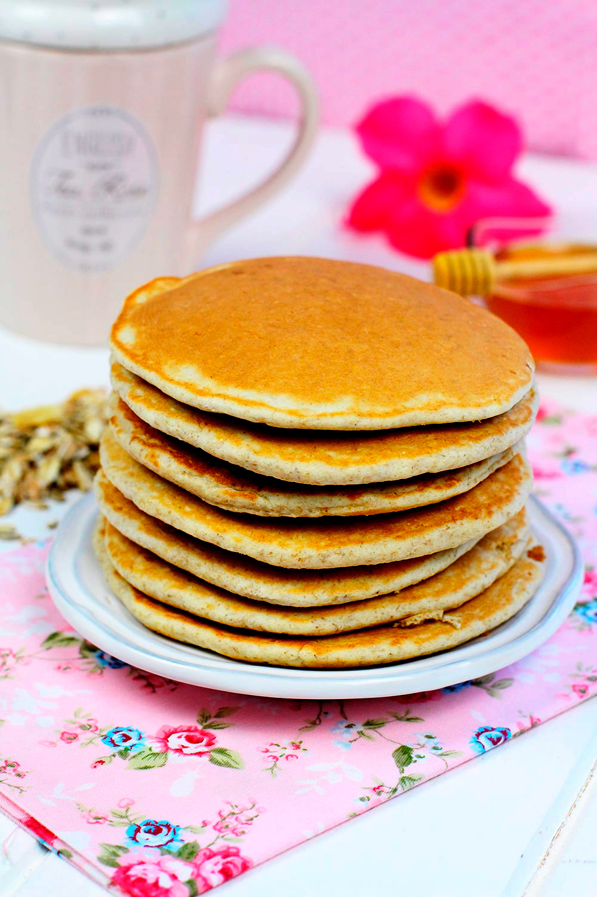

Pancakes

Description
Most fluffy and delicious pancakes ever!
This recipe makes about 4 pancakes.
Ingredients
Dry Ingredients
- 1 cup flour
- 4 tbsp sugar. You can add more if you like your pancakes sweet.
- 1 tbsp baking powder
- Pinch of salt
Wet Ingredients
- 3/4 cup milk
- A bit of vinegar
- 1 egg
- 1 tbsp vegetable oil
- 1 tsp vanilla
Steps
- Add all the dry ingredients in a bowl, straining them all except the sugar.
- Add all the wet ingredients in another bowl.
- Pour the wet mixture in the dry dry ingredients bowl and mix gently. Be careful not to mix it too much, some lumps are ok.
- Cook the pancakes in a medium heat pan. You'll know it's time to flip them when they start to form holes in the top.
- Serve the pancakes with your favorite toppings.